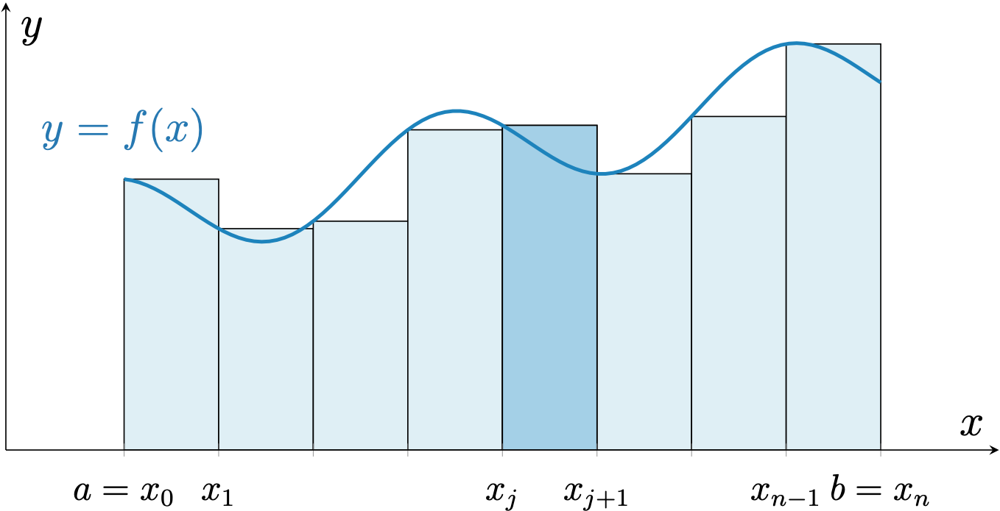
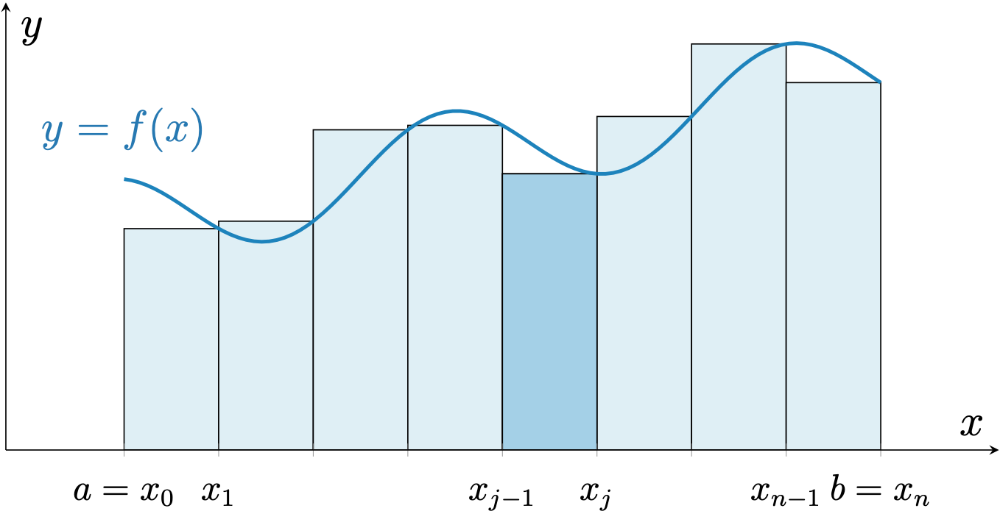
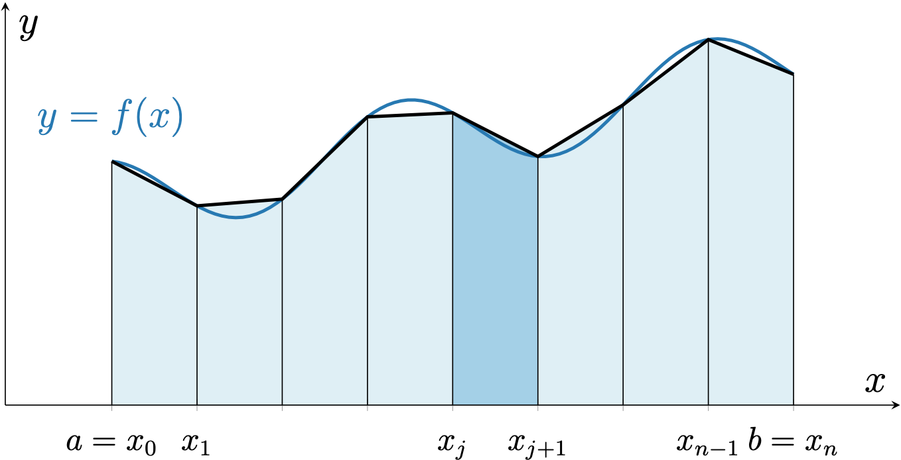
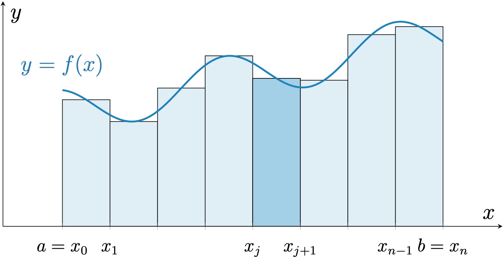

数値積分
積分を数値的に計算するプログラムを書いていきましょう．
この講義で扱う積分は 1 変数関数の定積分です：\( \displaystyle I = \int_a^b f(x)\,\mathrm{d}x\).
積分の数値計算法は現代でも非常にホットな研究トピックなのですが，この講義では，かなり古くから知られている非常にシンプルな方法を学び，julia でプログラミングしてみます． 今回は 4 つの手法を扱います．
まず，どの手法でも区間 \([a,b]\) を \(n\) 個の区間に分割します：
\[a = x_0 < x_1 < x_2 < \cdots < x_n = b. \]
必ずしも等間隔に分割する必要はありませんが，等間隔に分割するのであれば，その幅は \( \displaystyle h = \frac{b-a}{n}\) となります（今回のプログラムでは，等間隔に分割する場合のみを考えますが，興味のある学生は，等間隔ではない場合なども考えてみるとよいでしょう）． 以上の準備のもと，\(I\) を近似する公式を 4 つみていきましょう．それぞれ，絵で説明したあとに，公式を示します．
なお，サンプルプログラムでは（\(a=0,b=1)\) としています．
矩形公式その 1 (algorithm1)

図から明らかと思いますが，各小区間で「左側」の点の関数値を使った長方形を考え，その面積でその小区間の積分の近似とする方法です．これを \(n\) 個の区間について足し合わせます：
\[ I_1 = \sum_{j=0}^{n-1} f(x_j) (x_{j+1} - x_{j}) = h\sum_{j=0}^{n-1} f(x_j). \]
一番最後の等式は，「等間隔に分割した場合」の等号です（以下の 3 つの公式の説明でも同様です）．
矩形公式その 2 (algorithm2)

これも図から明らかと思いますが，各小区間で「右側」の点の関数値を使った長方形を考え，その面積でその小区間の積分の近似とする方法です．これを \(n\) 個の区間について足し合わせます：
\[ I_2 = \sum_{j=1}^{n} f(x_j) (x_j - x_{j-1}) = h\sum_{j=1}^{n} f(x_j). \]
台形則 (algorithm3)

各小区間で「両側」の点の関数値を使った台形を考え，その面積でその小区間の積分の近似とする方法です．これを \(n\) 個の区間について足し合わせます：
\[ I_3 = \sum_{j=0}^{n-1} \frac{f(x_{j+1})+f(x_j)}{2} (x_{j+1} - x_j) = \frac{h}{2}f(x_0) + h\sum_{j=1}^{n-1} f(x_j) + \frac{h}{2}f(x_n). \]
中点則 (algorithm4)

各小区間で「中心」の点の関数値を使った長方形を考え，その面積でその小区間の積分の近似とする方法です．これを \(n\) 個の区間について足し合わせます： \[ I_4 = \sum_{j=0}^{n-1} f \left( \frac{x_{j+1} + x_j}{2} \right) (x_{j+1} - x_j) = h \sum_{j=0}^{n-1} f \left( \frac{x_{j+1} + x_j}{2} \right). \]
課題
サンプルファイルをダウンロードし，その中の指示に従ってプログラムを完成させましょう．必要に応じて，「ここを埋める」が複数行になったり，別の箇所に行を挿入する可能性もあるかもしれません．また，「ここを埋める」に該当するfor文の範囲（例えばfor j = 0:num-1）は自由に（適切に）変更して構いません．CLEで提出する際は，「ここを埋める」付近のプログラムをコピーして，考察も書いてください．図表を添付することも歓迎します（その場合，考察ではファイル名を参照するようにしてください）．
サンプルファイルはこちら